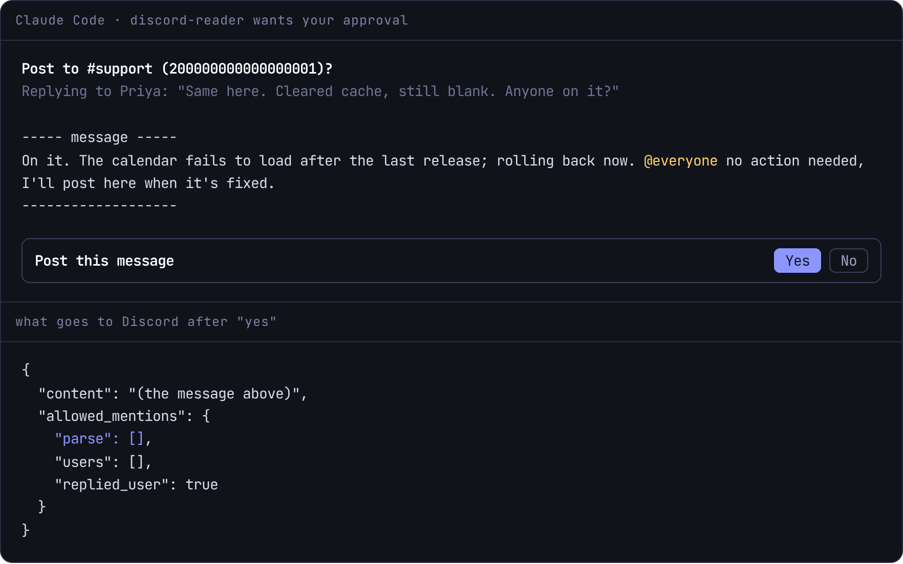
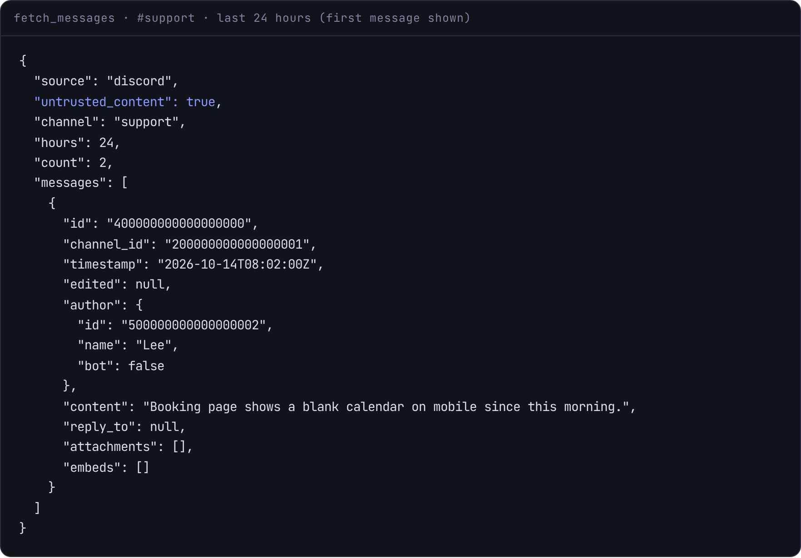
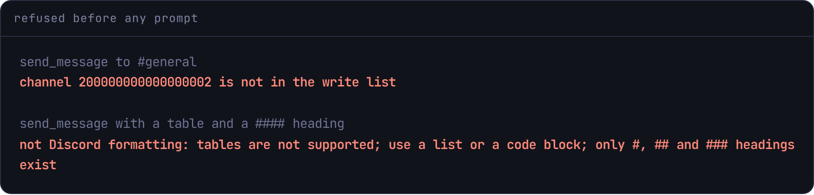

Discord bot for Claude Code
by Shinzuu
A day of a channel in one ask. Posts only where you allow.
discord-reader pulls, searches and sums up Discord channels, reads a message from a link with what came around it, and posts, replies, reacts or opens threads. It works only in channels you allowlist, and every change waits for your approval.
- 168
- hours of a channel in one pull, threads included
- 23
- Discord actions
- 144
- automated tests
- 0
- @everyone, @here or role pings, ever
Your allowlist
- #support read + write
- #general read only
- #releases read only
- #leadership not listed
Invented server. Anything not listed is refused before a single message is read.

Catch up without scrolling back
Ask for the last day, or a week. Big pulls are saved to a file so nothing gets cut off.

- Up to a week at onceEvery message in the last 1 to 168 hours, oldest first, up to 5,000 messages and 50 threads.
- A link, with its contextPaste a message link and get the message, the replies to it and the messages around it.
- Search, members, eventsThe server's own search, 25 results a call, plus display names, roles and scheduled events.
- Files stay privateAttachments download only from Discord's own file hosts, up to 25 MB each, into a folder only you can read.
- No cut-off answersA result over about 60 KB is written to a private file and Claude reads it from there.
Three checks before anything goes out
A post has to be on the write list, in Discord's formatting, and approved by you.
- 1. The write listA separate, shorter list. Reading a channel never implies writing to it. A channel off the list is refused before you are even asked.
- 2. Discord's own formattingTables, HTML, deep headings, images and horizontal rules show up as raw symbols in Discord, so a message that uses them is sent back to be fixed.
- 3. Your approvalThe prompt shows the channel, the message being replied to, anyone who will be pinged and the exact text. The model cannot answer it for itself. No, cancel or a timeout posts nothing.
- Pings stay narrow@everyone, @here and role pings never fire. A user is pinged only when listed in the request, and a reply pings only the person replied to.
- Only its own messagesIt edits or deletes only messages it posted itself. Uploads from secret folders, such as SSH keys or config, are refused.

What a person does in Discord by hand
Nothing runs on a schedule. It acts only when you ask in the terminal.
- Read
Servers, channels, a channel's history, search, a message from a link, reactions, attachments, members, events.
no prompt - Post
Send or reply, edit or delete its own messages, upload a file, forward.
approval - Organise
React, pin, start or close a thread, create a forum post.
approval - Gather
Run and end polls. Create scheduled events where a server allows it.
approval - Direct messages
Only to the people on a separate DM list.
approval
A bot that stays in its lane
Your own bot token, on your own machine.
- Token kept privateStored in a file only you can read. Never logged or returned, and removed from error text. The server will not start if its config could be changed by another user.
- Never posts twiceA failed post is retried only when Discord says it was rate-limited and did not process it.
- Stops itselfAfter 1,000 refused responses in 10 minutes it stops sending, a tenth of the level at which Discord bans bots.
- Config changes apply liveEdit the allowlist and the next call uses it. A broken config fails every call until fixed; the old one is never kept.
What setup looks like
You create the bot. Nothing is shared or hosted.
- Claude CodeThe server registers with it, and its prompts carry the approvals.
- Node.js 24 or laterIt runs its sources directly, with no build step.
- A Discord bot you createIn Discord's developer portal, private, with the message content setting on.
- Manage Server on your serverTo invite the bot. It starts with read-only permissions.
- The discord-reader folderThe server, a skill for Claude, and an example allowlist.
Source available on request.
Set up with your AI agent
Paste one prompt into Claude Code. It walks you through creating the bot, has you store the token without it showing, writes the allowlist with you, and pulls one channel as a test.
› walk you through creating the bot › you paste the token, hidden › invite with read-only permissions › write the allowlist with you › test: list servers, pull one channel
Questions
Can it post without me?
No. Every post, edit, delete, reaction, pin, upload, thread, poll, event and DM waits for your answer in the MCP client's prompt. If the client cannot show a prompt, changes are refused.
Can a message in a channel tell Claude what to do?
Every read result is labelled as untrusted content from Discord, and any change it might suggest still needs your approval.
What stops an accidental @everyone?
The request sent to Discord tells it to parse no mentions from the text. Only users listed in the request can be pinged, and they are shown in the prompt first.
Does it read every channel?
Only the servers and channels you list. You can also deny the bot access to channels in Discord itself.